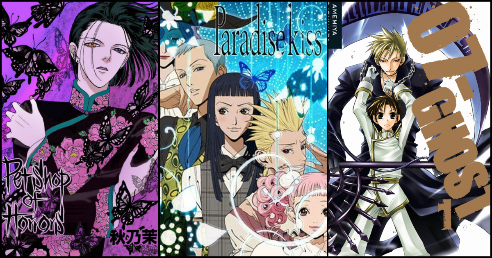

JOSEI ANIME
THIS IS PAGE IS FOR JOSEI COMMUNITY MEANING ANIMES/MANGES FOR YOUNG ADULT WOMEN.
Home
Wikipedia
Crunchy Roll
Top14
1 / 6

Josei
2 / 6
Pet Shop Of Horrors
3 / 6
Paradise Kiss
4 / 6
07-Ghost
5 / 6
Nana
6 / 6
Honey and Clover
❮
❯
ABOUT:-THIS FAN-SITE IS MADE BY AMAN GUPTA, SHASHWAT GUPTA AND ANCHIT MAHAJAN IN CHANDIGARH UNIVERSITY CONTACT:-INSTAGRAM(@ANCHITMAHAJAN30) TWITTER(@ANCHIT.MAHAJAN)